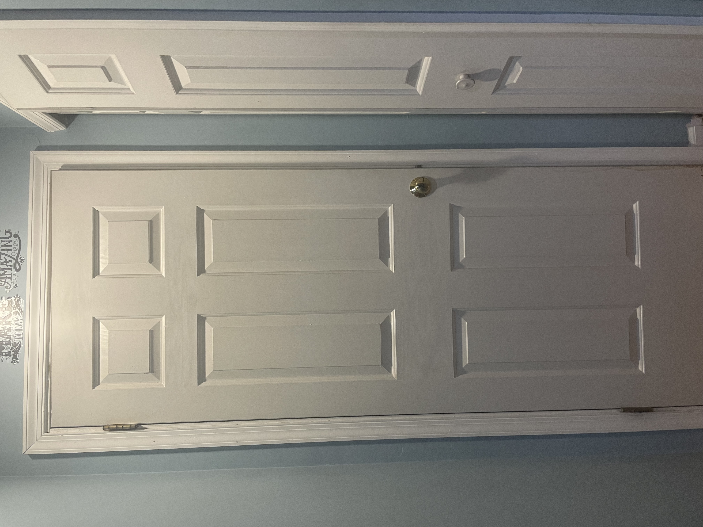

I have tested 5 images,
GOOGLE LENS has predicted all 5 of them accurately, And
MOBILENET was less accurate with only 3 correct.
So according to my case study GOOGLE LENS is more accurate
CASE STUDY BETWEEN GOOGLE LENS VS MOBILENET
GOOGLE LENS

vs
MobileNet
- Test Image -
- Test Image -
- Test Image - 
- Test Image -
- Test Image -